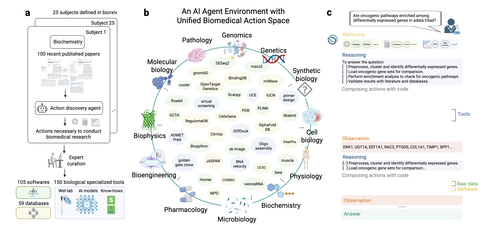

01
RESEARCH QUESTION & CONTRIBUTIONS
研究问题与核心贡献
研究定位
把“知道怎么做”推进到“真的执行出来”
生物医学研究的问题并不只是知识不足。文献、数据库、模型、R/Python 包、CLI 软件和实验协议分散在不同系统中，
很多复杂工作需要研究者反复查找、转换格式、写胶水代码并检查中间结果。Biomni 将目标定义为：
让一个通用 Agent 能检索、组合并执行这些行动，而不是为每类任务手写固定流程。
这使 Biomni 更接近“可执行研究操作系统”而非问答机器人：它读取问题、选择资源、维护计划、运行代码、
观察输出并修正下一步，最终交付报告、图表、序列、协议或代码产物。[1]
真正的瓶颈
数据与工具增长速度超过专家可用时间；大量分析机会因工作流碎片化而被搁置。
论文边界
“Autonomous”主要指任务分解和工作流执行，不代表系统能独立判断什么科学问题最重要或最终结论是否可信。
E1
统一行动空间
把 150 个专用工具、105 个软件包与 59 个数据库放进一个 Agent 可理解、可调用的环境。
A1
通用执行 Agent
以资源检索、代码式规划和交互执行动态组织工作流，不依赖任务专用模板。
EVAL
跨域评测
Biomni-Eval1 用 443 个查询覆盖 10 类研究任务，并加入多个专家准确率与耗时对照。
R0
开放推理模型
利用 Agent 交互轨迹进行强化学习，说明行动环境也能成为训练专用生物推理模型的反馈场。
02
BIOMNI-E1
从文献中构建统一生物医学行动空间
INPUT
25 个领域
bioRxiv 学科分类
→
CORPUS
2,500 篇论文
每领域 100 篇近期论文
→
DISCOVERY
Action Agent
抽取任务、软件、数据库
→
CURATION
专家筛选与测试
去重、非平凡性、测试用例
150
Specialized Tools
序列分析、CRISPR 设计、细胞注释、药物靶点、蛋白结构、实验协议等封装函数。
59
Databases
ClinVar、OpenTargets、PDB、CellxGene、Reactome 等远程 API 与本地结构化数据湖。
105
Scientific Software
Scanpy、DESeq2、PLINK、AlphaFold、PySCENIC 及 Python/R/CLI 分析生态。

历史架构图｜行动发现、Biomni-E1 环境与 Biomni-A1 执行链。
图像来自 2025 bioRxiv 预印本 Figure 1（CC-BY 4.0）；本文的评测结论仍以 Science 2026 正式论文为准。
为什么要分三类资源？
- 函数工具有明确输入输出，适合标准化调用。
- 数据库与数据湖提供外部事实和大规模结构化数据。
- 科学软件保留完整编程能力，适合无法压缩成单次函数调用的流程。
覆盖面不等于完备性
“近期论文优先”有利于覆盖新方法，却可能低估经典方法；数据库、软件版本和许可持续变化，行动空间需要长期维护而不是一次性收集。
03
BIOMNI-A1
检索增强、代码式规划与观察驱动执行
01RESEARCH INTENT
Understand
解析问题、数据位置、输出约束与可验证目标。
02CONTEXT
Retrieve
从工具、数据湖、软件与 Know-How 中选择资源。
03REASONING
Plan
建立分步计划，显式维护完成、失败与新增步骤。
04ACTION
Execute
生成 Python、R 或 Bash，组合控制流与多工具数据流。
05FEEDBACK
Observe
读取 stdout、错误、文件、图表与数据库结果。
06EVIDENCE
Deliver
交付结论、引用、研究日志与可检查的中间产物。
OBSERVATION-DRIVEN CONTROL LOOP
Observe 将真实运行结果写回上下文；若证据不足或执行失败，Agent 返回 Plan 修订路径，而不是沿固定工作流继续。
Biomni-A1 的执行闭环：资源选择缩小行动空间，代码执行产生环境观察，观察再驱动重规划与最终证据交付。
第一阶段由资源检索器把庞大的 Biomni-E1 行动空间压缩成任务相关子集；第二阶段由执行 Agent
在这个子环境中维护计划、生成代码并读取观察。方法的关键不在某个单独工具，而在于
“选择资源—组合动作—观察结果—修订计划”可以反复循环。[1]
3.1 两阶段上下文构建：先检索资源，再生成任务提示
完整资源目录
TOOLS函数工具与数据库接口
DATA LAKE本地结构化数据与索引
LIBRARIESPython / R / CLI 软件
KNOW-HOW协议、最佳实践与排错文档
Retriever LLM
→
返回各类别索引
任务专用上下文
只注入被选中的资源描述
- 工具名称、用途、参数与导入路径
- 可用数据集及其内容说明
- 软件库能力与运行方式
- 相关实验协议和 troubleshooting
Retriever 实际做了什么？
这是 LLM 选择器，不是传统向量检索
论文用独立 LLM 根据用户问题挑选工具、数据与软件。当前仓库把全部候选资源的
名称 + 描述编号后写入提示，要求模型按 TOOLS、DATA_LAKE、
LIBRARIES、KNOW_HOW返回索引列表，再据此重建执行 Agent 的系统提示。
[6]
检索提示强调“be generous”，优先纳入数据库、文献搜索和分子生物学工具：这提高召回率，
但也意味着上下文压缩依赖另一个 LLM 的启发式判断，而不是可验证的最优检索。
为什么不能直接暴露全部工具？
上下文长度只是表层问题，选择复杂度更关键
资源目录越大，模型需要比较的相似工具越多，错误参数、错误数据库和不必要调用也随之增加。
检索层把“在哪些资源中工作”与“如何完成任务”拆开，让主 Agent 把上下文预算留给数据、
中间观察和研究计划。正式论文将资源检索视为 A1 泛化能力的重要组成，而不是单纯节省 token。
失败模式也很明确：漏检会让正确资源完全不可见；当前仓库在检索异常时可退回全部工具，
但这种降级会重新引入上下文拥挤。
3.2 计划不是一次性提示，而是外显的任务状态
PLAN STATE
- ✓检查输入文件、列名与缺失值
- ✓选择分析工具并建立数据对象
- ×原参数运行失败：样本量不足
- →修改过滤阈值并重新估计
- ○用替代数据库交叉验证结论
计划承担三种功能
- 分解
- 把开放问题转换为有依赖关系的可执行步骤。
- 记忆
- 记录已完成、失败与新增步骤，避免长轨迹中重复工作。
- 审计
- 让研究者看到 Agent 当前假设、下一步动作和偏离原计划的原因。
当前系统提示要求使用编号 checklist，并在每轮执行后显示更新计划。它不是独立的符号规划器，
也不保证依赖关系形式正确；本质上仍是语言模型维护的文本状态。
3.3 CodeAct：把代码作为跨资源的通用动作语言
为什么不用固定 function calling？
生物医学工作流需要控制流与共享变量
固定函数调用适合边界清晰的单次动作，却难以表达按样本循环、根据统计结果分支、
并行处理多个队列、把数据库结果传给 R 包、再用 CLI 生成下游文件。代码同时承担
控制流、数据转换和工具编排，因此可动态组合此前没有硬编码的流程。
PythonRscriptBash / CLITool APIs
MODEL
<execute> result = tool(data); print(result) </execute>
↓ parser · route · run
ENV
<observation> stdout / error / file path / plot </observation>
↺ append to message state
MODEL
<solution> result, evidence and limitations </solution>
每轮只能选择执行或结束；环境观察被写回消息历史，使下一轮推理能依据真实输出而不是想象中的结果。
3.4 状态机如何把生成、执行与恢复串起来
START
Generate
读取问题、计划与历史观察，生成下一段推理及一个动作标签。
→
ROUTER
Parse
<execute>进入运行节点；<solution>结束；格式错误则要求重写。
→
ACTION
Execute
按标记分派 Python、R 或 Bash，并捕获 stdout、异常、图像和文件路径。
→
FEEDBACK
Observe
把结果包装为 observation 写回状态，再返回 Generate 形成闭环。
PLAN UPDATE成功步骤打勾；失败步骤标记原因并插入替代路径
RUNTIME ERROR异常文本成为 observation，模型可修改参数、输入格式或工具
PARSING ERROR缺少动作标签时请求重新生成；连续失败后终止，避免无限循环
OPTIONAL CRITIC测试时可在候选解之后加入自我批评，再执行额外改进轮次
3.5 上下文、运行时与产物如何被管理
| 机制 | 解决的问题 | 当前公开实现 | 方法边界 |
|---|
| 资源压缩 |
避免完整资源目录占满上下文 |
Retriever 返回四类资源索引，再重建系统提示 |
选择本身可能漏召回或过召回 |
| 持久执行状态 |
跨步骤复用变量、数据对象与中间结果 |
Python REPL 保留命名空间；R/Bash 通过独立运行路径 |
状态污染会让复现依赖执行顺序 |
| 观察压缩 |
控制超长 stdout 对后续推理的挤占 |
当前仓库将超过 10,000 字符的输出截断后写回 |
关键警告可能位于被截断部分 |
| 轨迹记录 |
保存动作、结果与可视化产物 |
消息状态、执行时间戳、捕获图像和报告导出 |
可追踪不等于结果已被独立验证 |
| 终止判定 |
从迭代执行切换到最终回答 |
模型输出 <solution>即结束，可选 self-critic |
缺乏通用的生物学正确性验证器 |
方法证据如何理解
消融支持“架构组合有效”，但不能隔离每一个因果贡献
论文通过基础 LLM、通用 coding agent、相同行动环境下的 coding agent，以及不同规划方式进行比较，
说明专业环境、资源检索和代码式规划共同贡献性能。HLE-Bio 中多个底座接入 scaffold 后均提升，
进一步表明增益不完全依赖单一模型。由于这些组件同时改变提示、可见资源、执行轨迹和错误恢复，
结果更适合解释为系统级消融，而不是每个模块的纯净因果效应。
最容易被忽略的方法边界
Biomni 的“验证”主要指检查程序输出、数据库证据或任务评分；当模型自行输出
<solution>时，并不存在一个通用科学真值模块。运行成功、答案符合 benchmark、
生物学结论成立和实验可重复，是四个不同层级。
04
LATEST EVALUATION
从 443 道任务到人类专家效率对照
443queries
10task families
56.6%Biomni average
6–12 ppHLE-Bio scaffold gain
BIOMNI-EVAL1
跨 10 类生物医学研究任务的平均表现
论文基准
数值按 Science 正式论文报告整理；不同任务的原始评分规则仍需分别阅读，平均值不代表每个子领域都达到同一成熟度。
HLE-BIO
同一个 scaffold，为多种底座带来约 6–12 个百分点绝对提升
将多个底座模型接入 Biomni 的资源检索、规划和执行框架后，生物医学难题表现均有提升。
这支持“环境与 scaffold 本身提供增益”，但不能据此把模型能力、工具覆盖和检索质量混成一个数字。
关键解释
增益跨底座出现，不完全依赖单一闭源模型；绝对分数仍受底座、上下文和工具可用性影响。
专家 A 41%
Biomni 46%
专家 B 51%
Biomni约 75 min
专家平均约 230 min
Biomni 60%
专家范围 60–70%
GWAS 因果基因识别
接近专家区间，单个位点约 4 分钟
两名专家对照
Biomni 80%
专家范围 70–80%
Biomni约 4 min
专家约 60–112 min
阅读指标时要保留三条分界：
分类准确率 ≠ 排序质量；语义匹配 ≠ 完整生物学解释；专家评分 ≠ 独立实验复现。
05
REAL-WORLD CASES
五类案例：证据强度并不相同
CASE 01
团队估计
穿戴设备数据分析
对 450 余个 CGM、饮食和活动文件进行清洗、对齐、可视化和假设生成。
约 40 min对照人工估计 60+ hours
价值在于把异构原始数据快速变成可检查结果；时间差来自 Stanford 团队估计，并非随机对照效率实验。
CASE 02
人工复核
多模态骨骼发育组学
组合 snRNA-seq、snATAC-seq 与空间/发育信息，运行 GRNBoost2、cisTarget、AUCell 并筛选调控网络。
336k+nuclei / 10-stage workflow
生成 AUTS2、ZFHX3、PBX1 等候选调控因子；轨迹与代码经过人工检查，但候选机制仍需独立实验验证。
CASE 03
单次湿实验
B2M sgRNA 分子克隆
完成靶点设计、BsmBI overhang、Golden Gate 协议、转化步骤、测序引物和最终质粒图。
2 / 2挑取克隆测序匹配
证明协议能够落地，但任务成熟、规则清晰，且验证规模很小，不能外推到开放式湿实验设计。
CASE 04
计算预测
蛋白热稳定性优化
组合 AlphaFold2、ThermoMPNN 与同源蛋白文献，迭代评估 Q83I、C66F、C110F 三个候选突变。
-4.108 kcal/mol预测累计 ΔΔG；98% 序列一致
这是 in-silico 稳定性预测，不是实测熔解温度、表达量或功能保持证据。
CASE 05
设备编排
Hamilton STAR 实验室自动化
Biomni 选择 PyLabRobot，把自然语言实验要求转换为含 deck 配置、移液、异常处理与资源清理的可执行代码。
8 compounds
×
12 dilution points
×
3 replicates
它验证了“研究意图 → 机器人动作”的编排能力，但没有展示 Agent 根据实验读数自主选择下一轮实验的闭环。
06
OPEN REASONING MODEL
从 Agent 交互轨迹到 Biomni-R0
训练信号的变化
让模型因“完成研究任务”而获得奖励
Biomni 的行动环境不仅能服务闭源模型，也能产生可评估的交互轨迹。强化学习把工具选择、
代码执行、错误修复和最终任务得分连接起来，使开放模型学习如何在环境中完成多步研究任务，
而不是只模仿自然语言答案。[7]
Biomedical query→Plan & act→Environment feedback→Task reward
8B model
0.318→0.588
Agent RL 后
32B model
0.346→0.669
Agent RL 后
Claude Sonnet 4
0.557
论文中的教师/闭源参考
| 层级 | 论文核心 | 当前公开实现中的演进 | 阅读提示 |
|---|
| Reasoning | A1 + CodeAct | Biomni-R0、自定义模型端点、多供应商 | 模型与 Agent scaffold 应分开评估 |
| Knowledge | 工具 / 数据湖 / 软件 | Know-How Library、协议资源 | 程序性知识仍需版本和许可管理 |
| Integration | 内置 Python 工具 | MCP 输入与对外工具服务 | 扩展能力也扩大信任边界 |
| Governance | 学术环境 | commercial_mode 过滤部分数据 | 代码许可不等于数据可商用 |
07
CODE DEEP DIVE
公开仓库如何把论文架构落到代码
分析快照
snap-stanford/Biomni · main
400c1f366b96a35ca253e13c9b06c5076af41d65
固定提交 ↗
REPOSITORY ROOT
Biomni/
Python package · runtime environment · evaluation · documentation
CORE PACKAGE
biomni/
agent/a1.py · react.py · qa_llm.py
model/retriever.py
tool/领域工具实现 · tool_registry.py
└ tool_description/工具声明与参数描述
└ schema_db/数据库查询 schema
know_how/协议、最佳实践与排错知识
eval/biomni_eval1.py
config.py · env_desc.py配置与环境目录
EXECUTION ENVIRONMENT
biomni_env/
setup.sh统一安装入口
bio_env*.ymlConda 依赖与版本
install_cli_tools.shCLI 软件安装
install_r_packages.RR 运行环境
cli_tools_config.json外部工具配置
INTERFACES & GOVERNANCE
root/
tutorials/Notebook 与 MCP 示例
docs/配置、冲突与接口文档
pyproject.tomlPython 包与依赖元数据
license_info.md第三方许可记录
README.md安装、Eval1 与版本声明
当前主分支的代码拓扑：biomni/承载 Agent 与资源层，biomni_env/负责庞大的执行环境，
评测、教程、文档和许可信息位于独立模块；颜色加深的文件是论文架构的主要落点。
入口与状态
biomni.agent.A1配置、数据下载、会话、Gradio、报告
AgentStatemessages · next_step · execution results
↕
推理与资源
ToolRetriever选择 tools · data lake · libraries · know-how
system prompt计划清单 · <execute> · <solution>
↕
执行与产物
run_python_repl持久命名空间中的 Python exec
R / Bash / MCP子进程、外部服务、文件与网络
agent/a1.py
主执行器
生成系统提示、构建状态图、解析执行标签、路由 Python/R/Bash、保存消息与图像产物。
查看代码 ↗
model/retriever.py
资源检索器
把所有候选资源写入选择提示，要求 LLM 返回工具、数据湖、软件与 Know-How 索引。
查看代码 ↗
tool/tool_description/
声明与实现分离
工具 schema 单独描述名称、参数与用途；运行时再映射到各生物领域 Python 模块。
查看目录 ↗
tool/schema_db/
数据库结构
保存 ClinVar、ChEMBL、Ensembl、GEO、gnomAD、PDB 等数据库的查询 schema。
查看目录 ↗
1A1 初始化创建 biomni_data/ 并按配置下载数据湖与 benchmark。
2检索资源从注册工具、已下载数据、软件描述和 Know-How 中选择子集。
3重建提示只暴露被选中的资源及其调用说明，要求先维护研究计划。
4解析动作<execute> 进入运行节点；<solution> 结束任务。
5回写观察stdout、错误和图像进入消息状态，继续下一轮生成。
版本差异
仓库 README 明确指出，论文复现发布冻结于 2025-04-15，与持续迭代的线上平台和当前主分支不同。
Science 正式论文报告 443 条 Eval1 查询，而本页检查的当前仓库与 Hugging Face README 为 433 条验证实例；
这类样本数差异应连同提交、数据集 revision 与评分脚本一起记录。直接运行最新版不能视为严格复现 Science 实验。
08
REPRODUCIBILITY, SAFETY & CRITIQUE
复现、安全与证据边界
HIGH
任意代码执行
当前实现会在持久命名空间中直接 exec 模型生成的 Python，并允许运行 R、Bash、网络和文件操作。
HIGH
超时不是可靠隔离
线程超时使用异步注入异常尝试终止执行，注释本身承认该方式危险且并非 100% 可靠。
MEDIUM
环境与许可漂移
约 11GB 数据湖、Conda/R/CLI 冲突、API 与数据库版本都会改变结果；Apache-2.0 不覆盖所有第三方资源。
MEDIUM
评测独立性
Biomni-Eval1 和部分真实任务由作者团队设计，专家样本有限，仍需预注册和外部团队持续维护的评测。
推荐部署边界
- 只读输入目录与独立输出目录
- 短期凭据、域名白名单和网络代理
- 容器 / VM 隔离与 CPU、内存、时长限制
- 危险 Shell、外发数据和机器人动作需人工审批
- 记录模型、提示、工具版本、参数和全部产物哈希
→
不应直接暴露
生产凭据、患者隐私数据、共享文件系统、实验设备的无限制控制权，以及不可逆或高成本动作。
评价“自主科研”时，应拆成三个层级
证据要求
↑
LEVEL 3AGENDA
科研议程自主性
识别关键混杂，提出有区分力的实验，并能依据失败结果改变研究方向。
证据状态尚未充分证明
LEVEL 2VALIDITY
科学结论有效性
统计结果、机制解释与候选假设经过专家复核、外部数据或湿实验验证。
证据状态已有小规模案例
LEVEL 1EXECUTION
工作流执行可靠性
代码能够运行，文件、格式与路径正确，工具调用产生可检查的中间产物。
证据状态Biomni 证据最强
越向上，评价对象越从工程执行转向科学判断，所需的独立验证、长期实验和责任机制也越严格。
覆盖广，但开放性有限
443 道题显著扩大覆盖面，但多数仍有可定义答案或评分函数，不能代表目标模糊、数据脏乱且没有金标准的前沿研究。
专家级是局部结论
单细胞、罕见病与 GWAS 任务表现进入小规模专家区间，不能表述为跨生物医学领域“全面超过专家”。
预测改进不是实验改进
蛋白稳定性案例展示了合理的工具组合和候选生成，但关键 ΔΔG 来自模型预测，缺少熔解温度和功能实验。
自动化还未闭环
Hamilton STAR 证明代码能驱动设备；真正闭环还需根据传感器和实验读数选择下一轮条件，并处理失败与安全联锁。
核心判断
Biomni 最重要的意义，不是让 AI 看起来更像会聊天的科学家，而是把生物医学 Agent
的行动空间、执行链、评测场和训练反馈统一成一种可扩展基础设施。
CURRENT DELEGATION SCOPE
当前可委托的研究任务
- 文献、数据库与结构化事实的联合检索
- 定义清楚的多步生物信息分析
- 候选基因、药物、突变与实验协议的初筛
- 批量数据整理、可视化和研究日志生成
HUMAN DECISION RIGHTS
必须保留的人类决策权
- 判断问题是否重要以及证据是否足够
- 识别混杂、数据偏差和不合理生物假设
- 批准高风险、高成本或不可逆动作
- 设计独立验证并承担科研与临床责任
CLOSED-LOOP READINESS
迈向闭环科研的基础能力
- 强沙箱、分级权限与实验设备安全联锁
- 从成功轨迹合成并验证新技能
- 跨实验室、预注册、抗污染的持续评测
- 从观察结果自动重设计下一轮实验的闭环